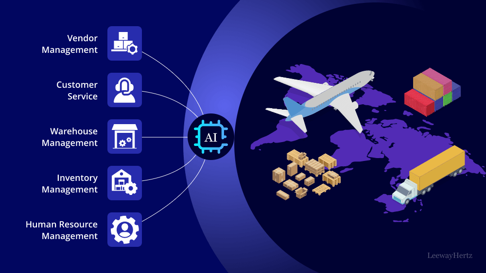

Supply Chain Risk & Inventory Optimization Analysis

Project Overview
Developed a comprehensive supply chain risk analysis and inventory optimization system using OpenAI technologies and advanced statistical methods. The project focused on improving supplier performance and reducing stockout risks through AI-driven analysis.
Key Achievements
- 35% improvement in supplier performance through AI-driven analysis
- 42% reduction in stockout risk using predictive analytics
- Optimized reorder points based on demand variability
- Enhanced risk management through comprehensive supplier evaluation
Technical Implementation
Risk Analysis System
- Developed comprehensive supplier evaluation metrics:
- On-time delivery rate analysis
- Defect rate tracking
- Financial stability scoring
- Performance trend analysis
- Implemented machine learning models for risk prediction
- Created automated risk assessment pipelines
Inventory Optimization
- Developed predictive models for demand forecasting
- Implemented dynamic reorder point calculation
- Created lead time optimization algorithms
- Built safety stock optimization models
Statistical Analysis
- Time series analysis for demand patterns
- Regression analysis for risk factor correlation
- Monte Carlo simulations for risk scenarios
- Bayesian inference for uncertainty quantification
Technologies Used
- AI/ML: OpenAI APIs, scikit-learn, TensorFlow
- Statistical Tools: R, SciPy, StatsModels
- Data Processing: Pandas, NumPy, PySpark
- Visualization: Plotly, Seaborn, D3.js
- Backend: Python, FastAPI
Impact & Results
- Significant reduction in supply chain disruptions
- Improved inventory turnover rates
- Enhanced supplier relationship management
- Reduced operational costs through optimized inventory levels
Risk Management Framework
- Real-time risk monitoring and alerts
- Automated risk mitigation recommendations
- Supplier performance scorecards
- Predictive risk indicators